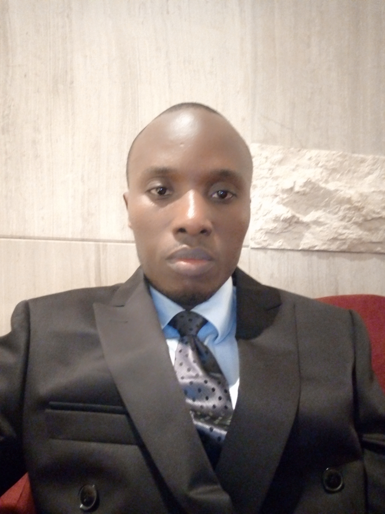

CURRICULUM VITAE


EXPERIENCES PROFESSIONNELLES
- 2018 : Consultant, Expert chargé de projet/ Cabinet du Ministre délégué au Congolais de l’étranger/ Ministère des Affaires Etrangères et intégration régionale.
- Depuis 2016 : Consultant Management de projets pour l’Association islamique AIAC.
- Depuis 2013 : Gestionnaire, chargé de la paie des fonctionnaires/ BIAC-RDC.
- 2008 – 2013 : Chargé de Marketing et développement; clientèle retail et corporates, produits bancaires charia compatibles.
- 2005 – 2008 : université islamique Al-mustafa du Congo
° Directeur de cabinet du rectora
° Directeur bureau culturel
° Responsable de la communication internet
° Redacteur en chef/ revue “le vendredi”
- 2007 – 2008 : Présentateur journal télévisé/ RTVS1
- 2003 – 2005 : Chef d’agence Congocom (renvendeur superdealer télécom)
EXPERIENCE DE TERRAIN
- Lead comité de pilotage projet banque Okapi/ Ministère des congolais de l’étranger;
- Supervision de la paie manuelle pour Fonctionnaires en cours de bancarisation;
- Formation des agents front office au techniques d’identification et de vente des produits charia compatibles;
- Organisation demarchage, veille concurrentielle et évènementiel.
ETUDES FAITES
- 2016 : Diplome de gestion d’entreprise et management de projets/ Université Muhammad Baqir/ Beyrouth-Liban;
- 2008 : Licence en théologie et développement communautaire, option : sciences islamiques et traditions prophétiques/ Université al-Mustafa du Congo;
- 2004 : Diplôme de Journaliste/ Institut congolais de l’Audio-visuel & au Centre de formation des journalistes et informaticiens, CEFOJI – Kinshasa Kasa-vubu;
- 2000 : Diplôme d’Etat/ Sciences commerciales et administratives/ CS Victor Hugo/ Kinshasa-Masina.
suite